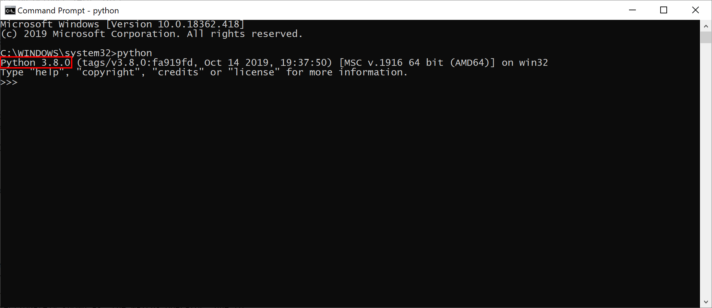
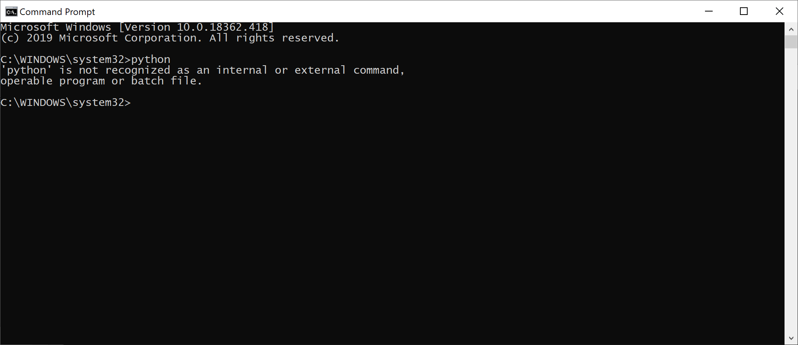
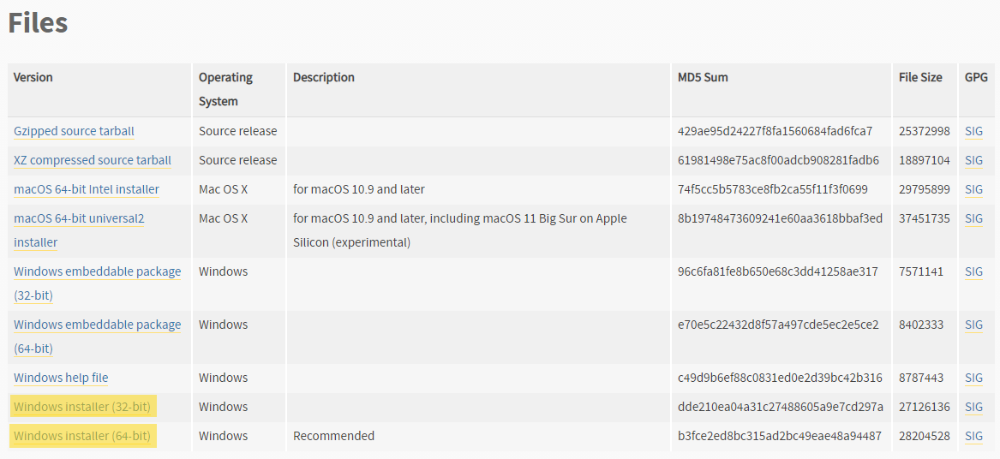
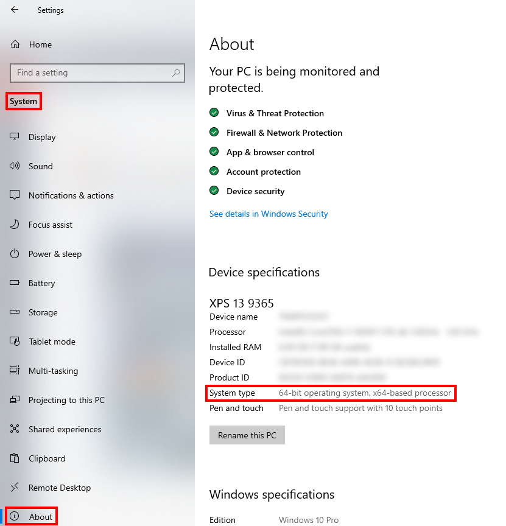

Installation Guide
This will take you through everything you need to install and set up to be able to start using the py-apteco package. There are three things you need in total:
Access to the Apteco API (Orbit API)
A suitable version of Python (3.6+)
The py-apteco package
You may skip any steps where you already meet the requirements.
Note
This guide was written with Windows users in mind, but the content should apply similarly to other operating systems.
Apteco API
py-apteco uses the Apteco API to connect to your FastStats system. This is also called the Orbit API and is part of the Apteco Orbit™ installation. So if you have access to Orbit, you have access to the Apteco API.
If Orbit isn’t set up for your FastStats system or you aren’t sure whether you have access to it, speak to whoever administers your FastStats system or contact Apteco support (support@apteco.com) who will be happy to help you.
Note
Orbit doesn’t need to be installed or running directly on your computer, you just need to have access to it. If you can log into it in the browser on your computer that’s fine.
Python
py-apteco is a Python package, so you use it with the Python programming language.
Is Python already installed?
You can check if Python is already installed on your computer by opening the command line, typing ‘python’ and pressing return. If it can find Python installed it will start an interactive Python session, and you’ll also be able to see which version of Python it’s running (indicated here in red):

If Python isn’t installed, you may see a message like this:

or it may open the the download page for the Python app in the Microsoft Store (see below for more information about installing from there).
Which version do I need?
py-apteco supports Python versions 3.6+ so if Python is already installed but the version you have is earlier than this you’ll need a later version as well.
Note
You can have multiple different versions of Python installed on one computer at the same time, you just need to make sure you’re using the right one for the task at hand.
Downloading from python.org
If you don’t have a suitable version of Python installed, you can download it from the official Python website: https://www.python.org/downloads/
If in doubt, choose the newest release of the latest version (at the time of writing, this is Python 3.9.1), though be aware that this won’t necessarily be at the top of the download list. Once you’re on the page for that release, scroll to the bottom and choose the appropriate download under Files. If you’re a Windows user and aren’t sure which download option to take, the Windows installer is probably best, highlighted here:

If you don’t know whether you need the 32-bit or 64-bit version, go to Settings → System → About on your computer and check System type under Device specifications:

Installing from the Microsoft Store
Python versions 3.7+ are available as apps in the Microsoft Store. Installing Python from here will install it just for your user and doesn’t require administrator privileges, so this a good option if you don’t normally have the necessary permissions to install programmes.
py-apteco
Once you have Python installed, you can install py-apteco itself.
The easiest way to do this is using pip,
the standard tool for installing Python packages.
From the command line, type:
python -m pip install apteco
This will fetch the package and install it into your Python environment. It will also fetch and install its dependencies (other Python packages which py-apteco itself uses).
Note
Be careful with names:
py-apteco is the name given to this tool as a whole,
but the name you use to install and use the actual package is just apteco.
Checking your installation
To make sure everything is installed correctly, first start a Python interactive session by opening the command line, typing ‘python’ and pressing return. Then type the following commands (double underscores either side of ‘version’):
>>> import apteco
>>> print(apteco.__version__)
0.8.2
If everything is working as expected, this should print the version of py-apteco you have installed.